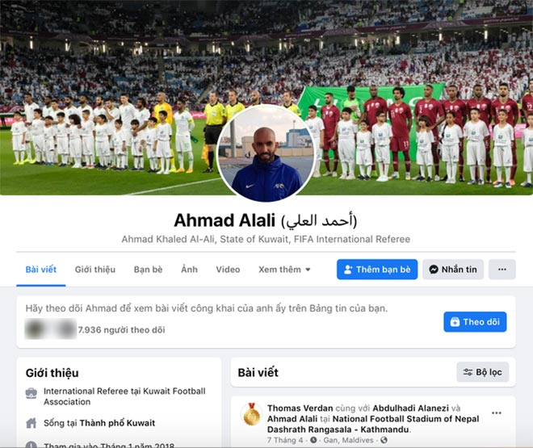

Thứ Ba, ngày 08/06/2021 19:00 PM (GMT+7)
Ngay khi hiệp 1 trận đấu giữa tuyển Việt Nam và Indonesia kết thúc, trang cá nhân của ông Ahmad Alali đã lập tức nhận “cuộc đổ bộ” của đông đảo fan cuồng bóng đá từ Việt Nam. Các cổ động viên này không chỉ gửi hàng nghìn biểu tượng phẫn nộ, bình luận lên các bài đăng của vị trọng tài người Kuwait mà còn trực tiếp gửi vô số tin nhắn cho ông.

Tài khoản cá nhân của ông Alali tăng gần 8.000 lượt theo dõi chỉ sau hiệp 1 trận Việt Nam - Indonesia. Hiện tại, con số này đã lên hơn 8.300 người.
Hành động của các CĐV Việt Nam xuất phát từ những quyết định có phần “nhẹ tay” của ông Ahmad Alali với các tình huống “chém đinh chặt sắt” của các cầu thủ Indonesia trong hiệp 1 trận đấu trên.
Dù sang hiệp 2, “cơn bão” tấn công của các fan Việt có phần dịu lại sau khi đội nhà có 4 bàn thắng. Tuy nhiên, ông Ahmad Alali tiếp tục đón nhận “làn sóng” phẫn nộ khác đến từ các fan cuồng của đội tuyển Indonesia khi cho rằng trọng tài chính thiên vị, công nhận hai bàn thắng của tuyển Việt Nam.
Chỉ sau một đêm từ một tài khoản mạng xã hội có rất ít lượt tương tác, trang cá nhân của ông Ahmad Alali đã có khoảng hơn 8.000 người theo dõi. Có bài đăng trên trang của ông lên đến hơn 20.000 lượt quan tâm, trong đó có hơn 6.000 người bày tỏ biểu tượng phẫn nộ. Thậm chí những bức ảnh của trọng tài này được các đồng nghiệp gắn thẻ cũng trở thành nơi để các fan cuồng trút giận.